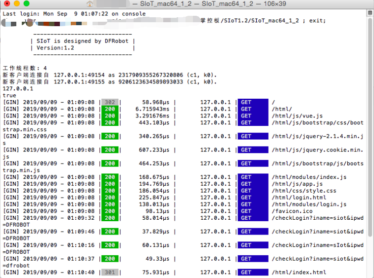

2. 安装运行¶
SIoT是一个绿色软件，将下载的压缩包解压并打开后，你能看到多个文件，如：
SIoT1.2_win.exe（Win10、Win7版本执行文件）
SIoT1.2_mac（Mac版本可执行文件）
SIoT1.2_linux（Linux版本执行文件）
注：更多操作系统支持的文件在不断增加中。我们正在开发windows下的“启动助手”，让软件的使用更加方便。
根据自己的操作系统，你可以运行相对应的软件。
2.1. Window版本¶
双击运行SIoT_windows1.2.exe（根据你的电脑，正确选择64位或者32位），将看到一个黑色的CMD窗口。窗口中显示各种连接信息。
如果你想维持你的计算机作为MQTT服务器的话，请不要关闭它。
注意：SIoT运行后会列出这个电脑可以使用的所有IP，169开头的一般是私有IP地址，不能作为MQTT服务器IP。

2.2. Mac版本¶
双击运行，或者打开终端转到相应目录然后执行命令，如“./SIoT_mac64_1_2”。
注意： 如果提示没有权限，先添加“执行”权限。
增加执行权限的命令：chmod a+x ./SIoT_mac64_1_2
如果担心程序运行后被中止，可以使用nohup命令运行。
2.3. linux版本¶
支持虚谷号、树莓派等开源硬件。
参考命令：nohup ./SIoT_linux &
其中“SIoT_linux”为程序的路径。
注意：需要用“chmod -R 777”命令，将目录的权限设定为最高权限。
2.4. 服务器信息¶
SIoT启动后，你的计算机就成为了一个标准的MQTT服务器，使用任何一款MQTT客户端程序就可以访问。
服务器地址：计算机局域网IP地址（在启动SIoT环境的时候会显示在黑框中，有时会显示多个IP地址，需要逐个尝试，一般为192或者172开头。）
MQTT端口：1883
用户名：siot（小写）
默认密码：dfrobot（小写）
消息主题（Topic）：项目名/设备名（可以自定义，中间的“/”不可缺少。）
Web管理地址：http://计算机IP:8080（如果在本机访问，计算机IP可以是127.0.0.1，也可以是局域网的IP地址，或者用“localhost”。）
参考地址1：http://127.0.0.1:8080
参考地址2：http://localhost:8080
注意：可以通过config.json文件修改用户名、密码和Web端口等信息。